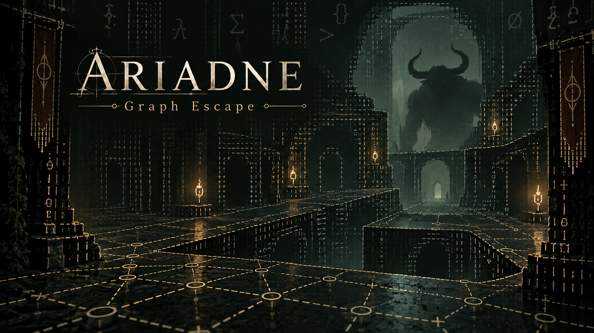

糸をたどれ。運命を出し抜け。
停止1曲ループ連続再生・全曲ループ
· 日本語は本ゲーム訳
長い迷宮の果て、アリアドネの糸は朝の光へ。あなたの足音に、誰かが「おかえり」と答えた。
☆ ESCAPE BONUS +300,000 pt
THANK YOU FOR PLAYING
指定した階層・レベルで新しい探索を始めます。HPは全快、杖は5・5・5・2回。謎の紋章を所持します。25F・50Fは指定マップより分岐を優先します。ランキングには登録されません。
指定は開始階のみ。15F以降はメイジも出現します。無戦闘ルートの確認には14F以下を選んでください。
あなたは @。敵の M をかわしたり倒したりしながら、階段 > を目指します。まずは25Fからの帰還が目標です。
1〜4で杖を選ぶ → 矢印 / WASDで射線を選ぶ → Enterで発射。光る射線と予測を確認してから撃ちましょう。Escで取り消せます。
階段を降りると＋1,000点、討伐で＋300点、未踏破ノードで＋10点。ゴールドや杖の回収、敵へのダメージも得点になります。
LVが上がると最大HP＋10。剣の基本攻撃力も＋1、＋2と交互に増加します。剣のダイスで＋3以上を引くと追加ヒット！
25Fごとの分かれ道では、右の出口から帰還すると＋300,000点。謎の紋章があれば左の扉からさらに深く進めます。紋章の所持中は敵の直接攻撃が1.2倍になるので注意。
探索は自動保存されます。タイトルの「続きから」で再開でき、JSON保存で書き出すこともできます。
操作を忘れたら、マップ下の「その他のキー説明」へ。TIPSはログ下からも読めます。
このブラウザー内の記録です。同点の場合は先に登録した記録が優先されます。
まだ記録がありません。探索を終えたら、名前を残しましょう。